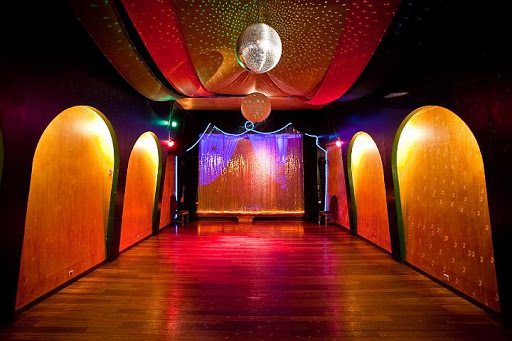
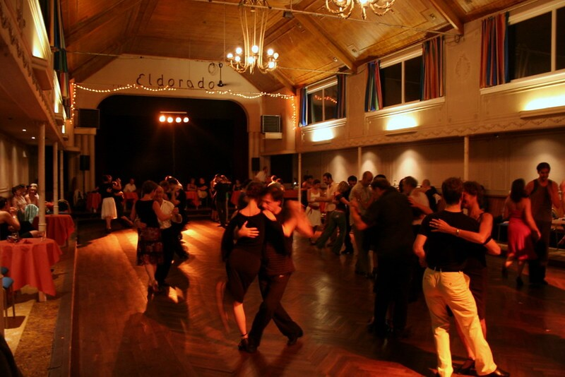
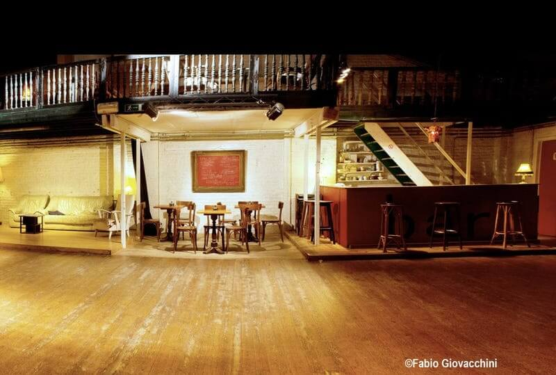
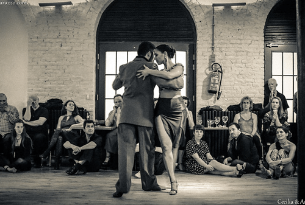
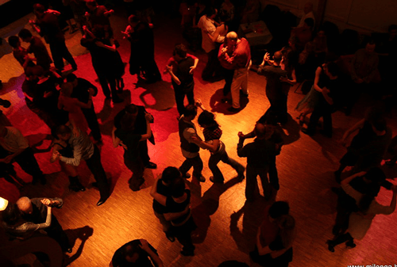
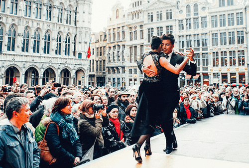
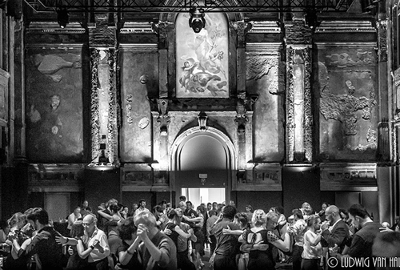
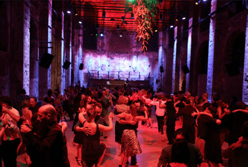
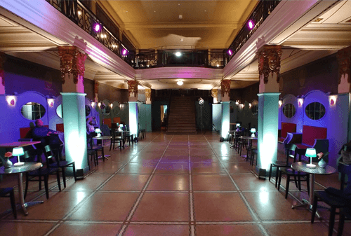

Découvrez nos milongas préférées!
Vous pouvez sortir danser tous les soirs de la semaine dans la plupart des grandes villes de Belgique.
milonga.be
Toutes les informations sur les événements de tango près de chez vous se trouve sur Milonga.be. Se concentre principalement sur les milongas, les stages et les ateliers à Bruxelles.
tango.be
Sur tango.be vous retrouvez un calendrier complet de tous les événements en Belgique.
Nos endroits préférés
La Milonguita
Notre propre milonga dans une salle historique avec parquet. Nous l'organisons une ou deux fois par mois un samedi.
Rue Montoyer 1, 1000 Bruxelles.

Tango Bar
C'est un petit endroit confortable pour aller et pratiquer le tango. Vous pouvez y aller tous les mercredis soirs.
Rue de Dublin 30, 1050 Bruxelles.

El Dorado
Une agréable salle de danse à environ 15 minutes en voiture de Bruxelles. Il est organisé une fois par mois le dimanche.
Kerkstraat 251, 1851 Grimbergen.

El Regalo
Il s'agit d'une très belle milonga avec un niveau de danse élevé. De plus, les organisateurs invitent à chaque fois un couple de danse pour un spectacle de tango.
Avenue Ducpétiaux 133a, 1060 Sint-Gillis.

Pianofabriek
Cette salle de danse au cœur de Saint-Gilles, vous accueille pour son agréable milonga le dimanche après-midi.
Pianofabriek, Rue du Fort 35, Sint-Gillis.

Maison du Peuple
Sans aucune doute, une des salles de danse les plus agréables de Bruxelles avec parquet. La milonga a lieu samedi.
Parvis de Saint-Gilles 37, 1060 Saint-Gilles.

Festivals & marathons
En Belgique, nous avons quelques grands événements internationaux. Deux festivals principaux sont organisés chaque année.
Outre les festivals, 4 marathons internationaux de tango sont organisés en Belgique.
Brussels Tango Festival
Bruxelles organise depuis plus de 15 ans l'un des plus grands festivals internationaux de tango. Le Concert Noble, la Grande Place, Vaudeville, Chateau de Karreveld, Albert Hall, GC de Maalbeek, de Markten & Hotel de La Poste (Tour & Taxis) sont parmi les lieux les plus prestigieux de cet événement.

Antwerp Tango Festival
Anvers a également son propre événement. Organisé à l'origine par Casa 32. Aujourd'hui, plus de 10 ans plus tard, organisé par Anibal Lautaro & Valeria Maside. Le lieu principal de l'événement est Zaal Athena, l'un des lieux d'événements les plus spectaculaires d'Anvers.

La Cita de los Amigos
Marathon de tango semestriel qui se déroule en hiver dans la fantastique église des Brigittines. En été, l'événement a lieu au Kurhaus de Spa.

Palace Tango Cita
Petit marathon de tango qui s'organise dans l'ancien cinéma Palace au coeur de Bruxelles.
